WannaCry Ransomeware
9 August 2024
By: Robert Gleason
In the early summer of 2017, WannaCry was unleashed on the world. Widely considered to be one of the most devastating malware infections to date, WannaCry left a trail of destruction in its wake. WannaCry is a classic ransomware sample; more specifically, it is a ransomware cryptoworm, which means that it can encrypt individual hosts and had the capability to propagate through a network on its own.
This sample was obtained through the TCM Practical Malware Analysis Course
Static Analysis
First thing you would want to do when starting Static Analysis is check to see if the hashes have been submitted to a malware logging database. In this instance, I was using VirusTotal. By submitting the SHA256 hash to VirusTotal, I could find valuable information that could speed up the static Analysis portion. Some stuff of interest is the sample being a 32-bit executable written in C++
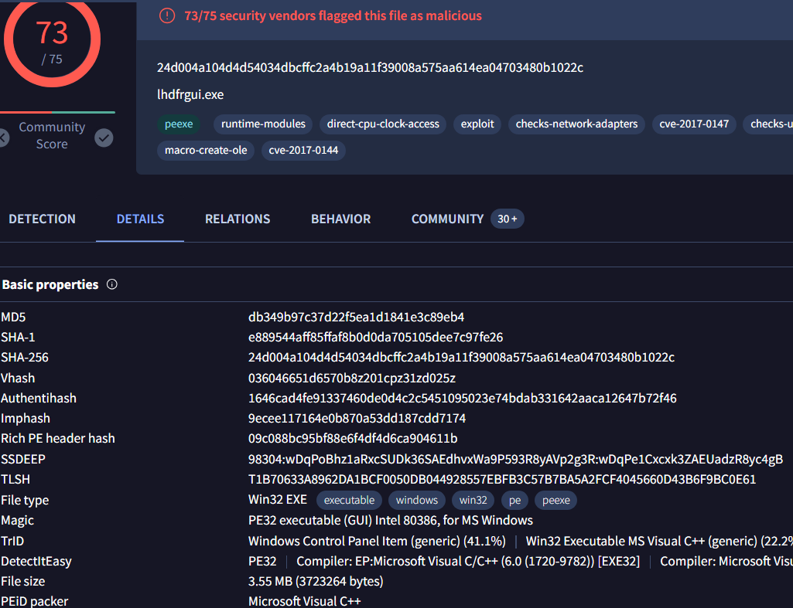Next step in the static analysis is to pull the strings from the binary. This is important since many binaries use different built in Windows API calls to execute their malicious payloads. If we can pull pull the strings from the binary and inspect the API calls that are being made, we can get a better idea of what the binary is going to do when executed.
We can pull the strings from the binary using the Floss command: floss -n 8 ransomeware.wannacry.exe | less
Some interesting stuff that was found when pulling the strings are the API calls that create and execute threads, creation of files, importing of dll files and even some encryption API calls.
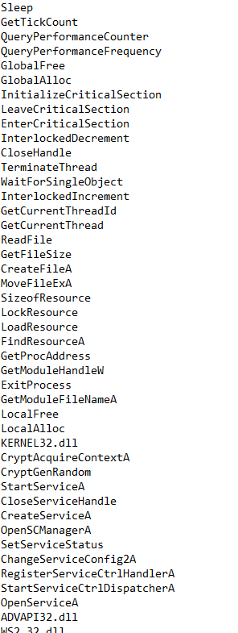If we keep investigating through the strings, we can see some date and time settings indicating the program might need it for whatever it's going to do when execution.
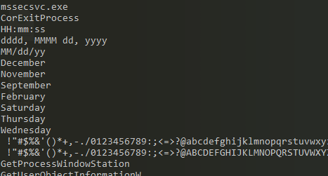We can see further in the strings that there's a bunch of base64 encrypted text used in the binary. The most interesting pieces of evidence we can find in the strings are a file being created somewhere on the C drive, a random URL being referenced, and tasksche.exe starting a task.
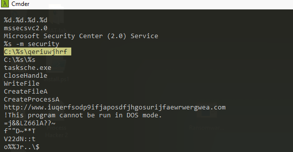 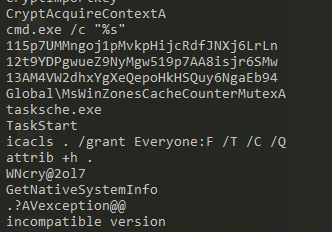We can now use a tool used to analyze the binary called PEStudio. When loaded we can see many different aspects of the binary we can't normally see by just pulling the strings out. Some important information I found was in the indicators, we can see the binary contains other files that will be executed once this one is executed.
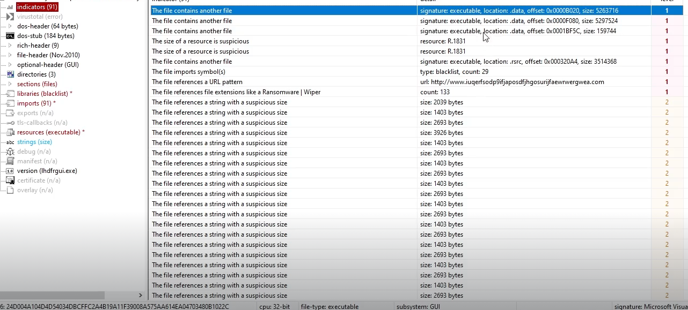If we go to the libraries tab on PEStudio, we can see some kind of Socket and Internet commnunication usage. If we go to the imports, we can see some Cryptography libraries and API calls relating to internet connections. With this info, we can assume the binary is opneing and closing ports.
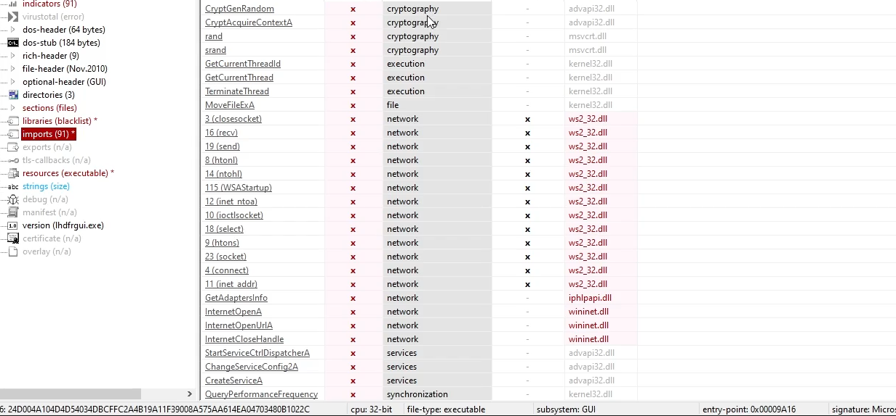Dynamic Analysis
Upon execution of the file, the following parameters needed to be met:
1. The file needed to be ran in administrator mode.
2. The binary cannot be able to reach a certain domain it was trying to contact.
Once the contitions have been met, the binary will execute the payload it's carrying. Abunch of files were downloaded onto the desktop, files and tools on the host machine were encrypted or stopped functioning, the wallpaper changed and a decryptor program opened demanding $300 in bitcoin.
We can find find out after running the binary through Sysinternals TCPView that the binary is reaching out trying to connect to multiple different IP addesses on port 445. This is how the binary propogrates throughout the network since it has been known to have worm like capabilites.
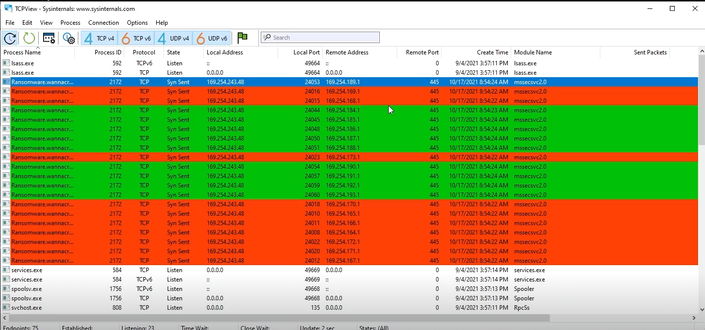Next we can go to check the current running processes through Procmon and filter for the ransomeware.wannacry executable. Through this process we cna see a file called tasksche.exe being created and unpacked under the malicious binary. If we look further into this by filtering instead for the specific Parent ID of the malicious binary and file creation, we can find the hidden directory that we saw earlier in the static analysis.
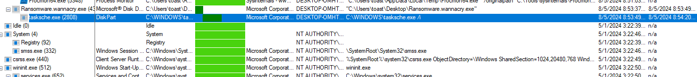 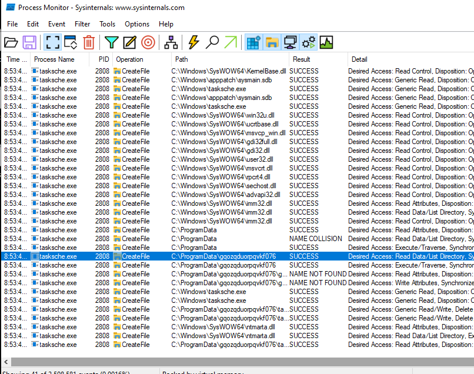If we navigate to this file, we can see it contains the staging arear of the binary where all the contents of the binary are unpacked and executed. The tasksche.exe is the second stage of the binary that is installing itself into a hidden directory.
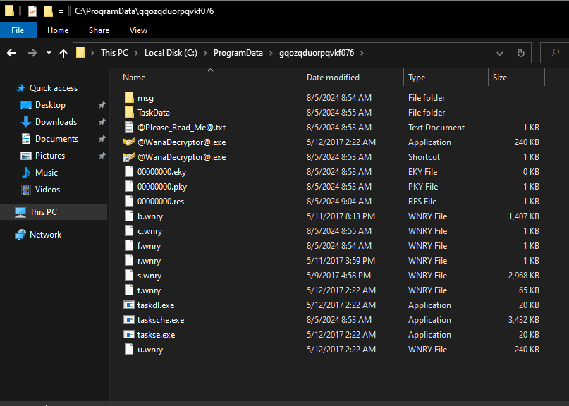The third stage of the binary is the persistence mechanism. If we check the services in task manager, we can see there is a service created with the same name as the hidden directory. This service will allow the payload to be ran if the host machine is rebooted.
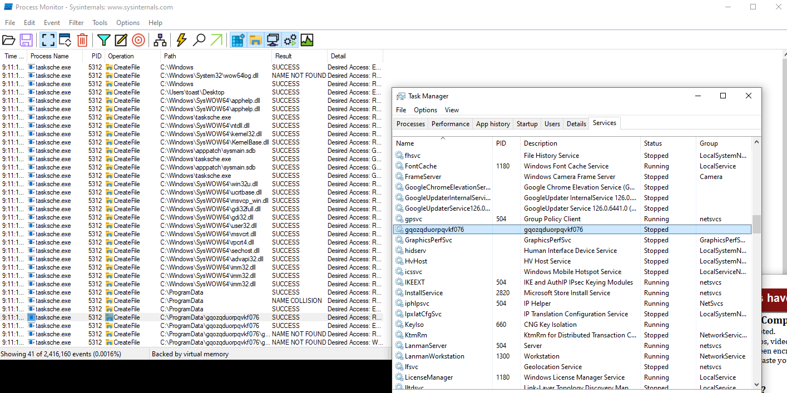Since we have the binary, we can inspect it at the assembly level using reverse engineering tools, I use Cutter for this, and see if we can find the kill switch. We know that the heavy lifting of the program is going to happen at the main function so we can inspect the main function and find everything we arr looking for.
In the main, we can see a lot of different Windows API calls that has to do with opening network connection and connecting to a URL. We can infer that this the test to see if the malware can reach the URL found earlier in the static analysis since the result of these API calls will be pushed into the edi and tested on itself. Once the result is tested, there is a jump if not equal to function that will decide if the payload executes or not.
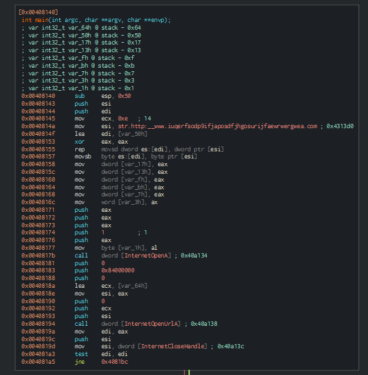
This is the kill switch. If the value of eai, which was the result of InetentOpenURLA API call is tested against itself, and there is a zero in that value, the zero flag is set to one. For the JNE fucntion, the zero flag is evaluated and whether or not the zero flag is set, one of two things will happen.
If the outcome of the API call InternetOpenUrlA (if it reaches out to a specific url and there is a result (success)) it will proceed to the location in memory 0x004081bc and the payload doesn't execute. This location cleans up the arguments on the stack and returns out of the program.
For the other side, if the API call is made and there is no connection to the specified URL, then the zero flag indicates that the program jumps to the other memory location. This does almost the exact same thing but it includes a function call, and if we trace into this function call, we can see it's the rest of the encryption payload.
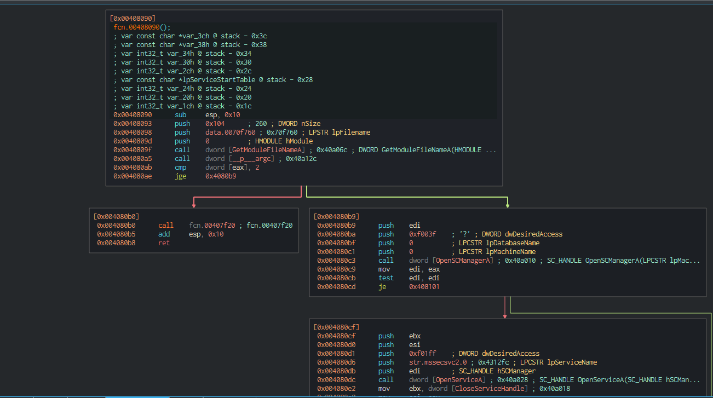